Connectors
Solace® PubSub+ Connector
Overview
ASAPIO connects to Solace PubSub+ message brokers (on-premise or cloud) using either REST-based or AMQP-based connectivity. REST connectivity is the standard approach and supports all Solace PubSub+ deployment types. AMQP support was introduced in release 2510.
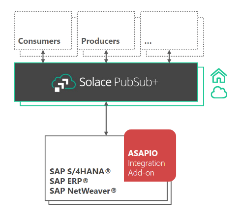
REST-Based Connectivity
RFC Destination
Create an HTTP RFC destination (SM59, type G) pointing to the Solace REST messaging endpoint (host and port, e.g. my-broker.example.com:9000). For HA setups with two Solace brokers, create one destination per broker. Optionally create a second RFC destination for the OAuth token endpoint if using OAuth authentication. Add the relevant certificates to the trust store in STRUST.
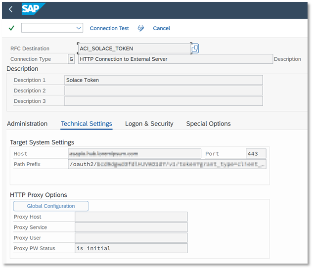
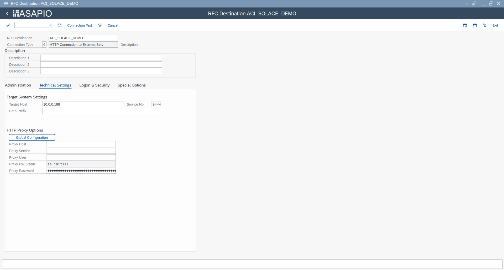
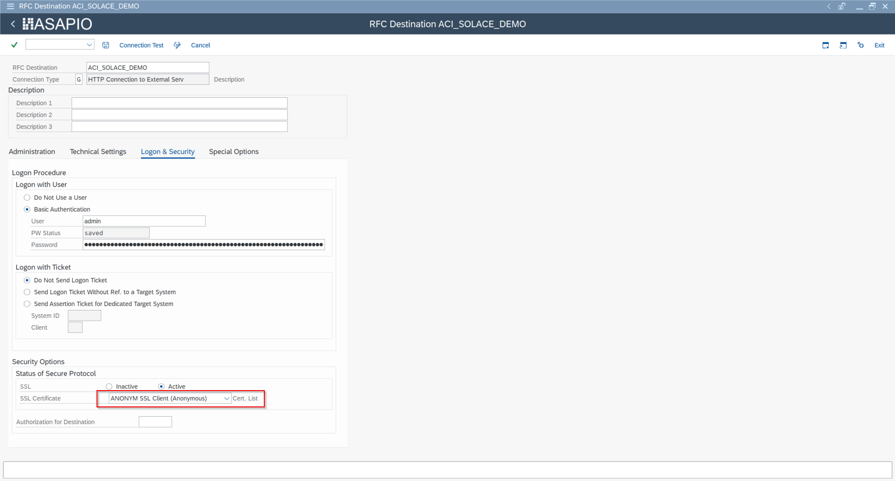
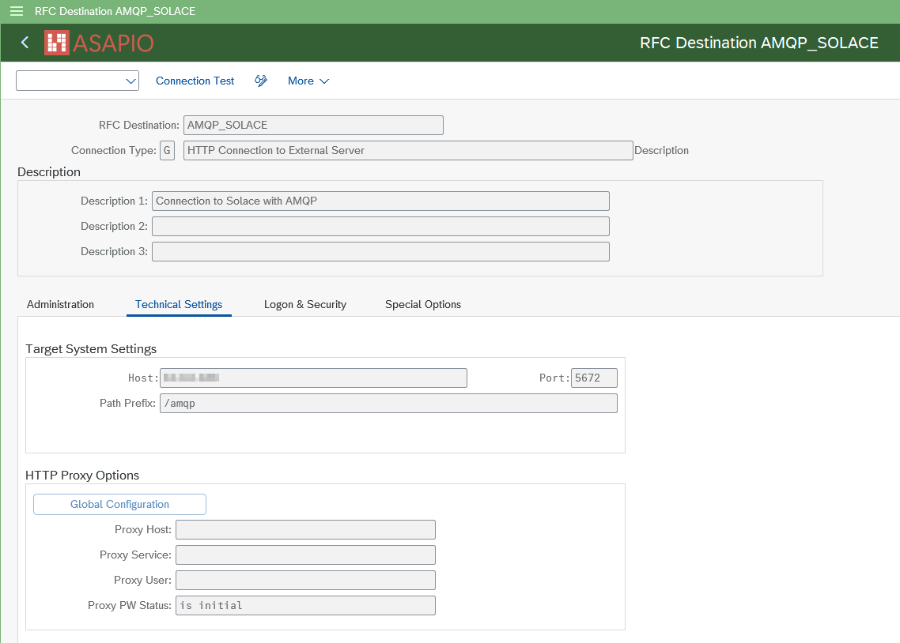
BC-Set & Cloud Adapter
Activate BC-Set /ASADEV/ACI_BCSET_FRAMEWORK_SOLC via SCPR20. If not using the BC-Set, manually add the cloud adapter and codepage entries.
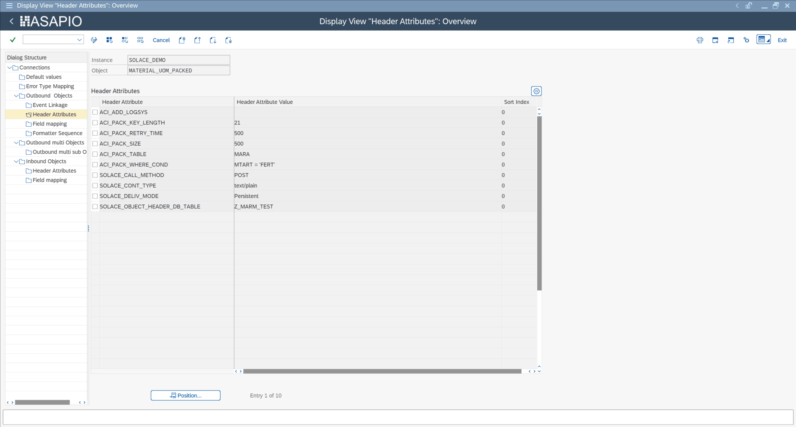
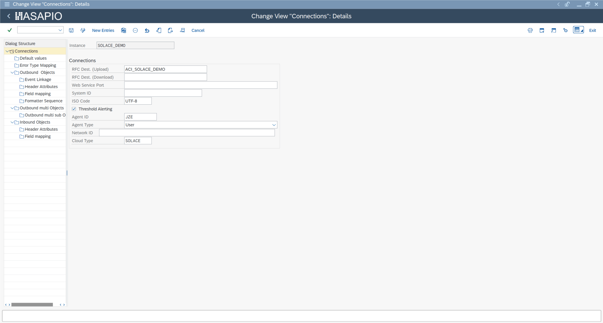
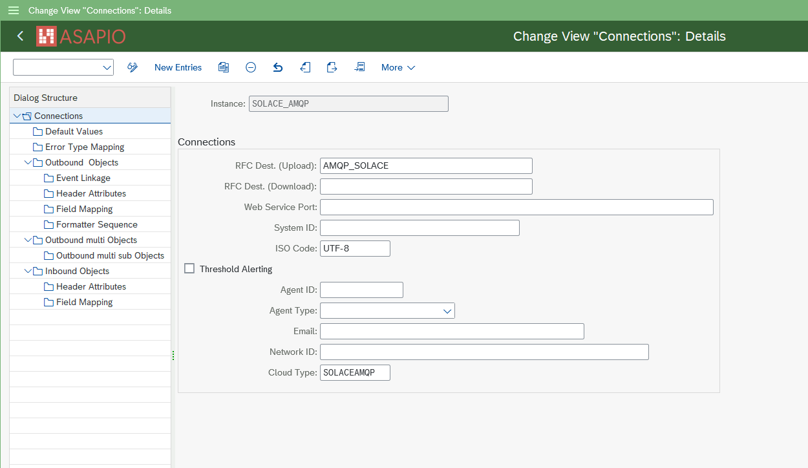
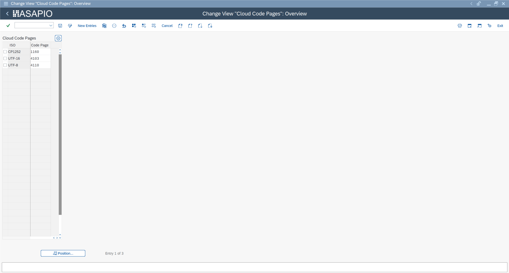
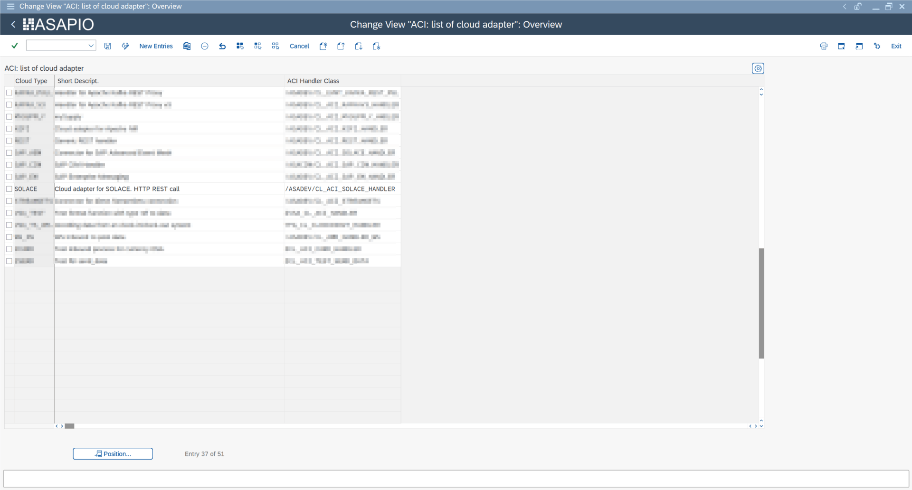
Cloud Instance
Create the connection instance in /ASADEV/ACI_SETTINGS:
| Field | Value |
|---|---|
| Cloud Adapter | /ASADEV/CL_ACI_SOLACE_HANDLER |
| Cloud Type | SOLACE |
| RFC Destination | Solace REST RFC destination |
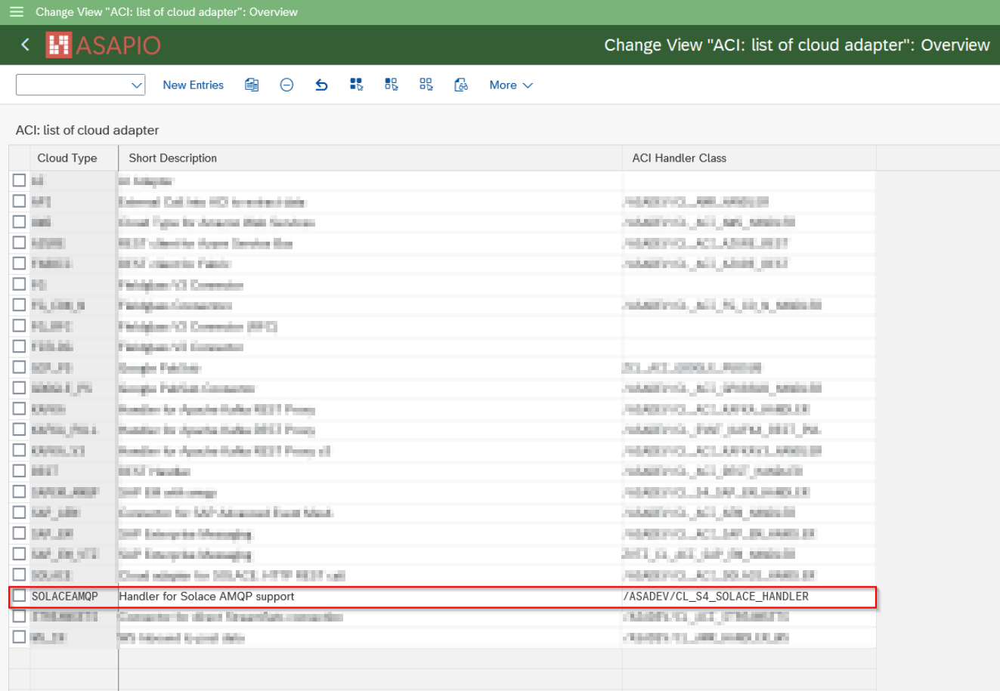
For OAuth authentication, set default values:
| Key | Value |
|---|---|
AUTH_TYPE | OAUTH |
CLIENT_ID | OAuth Client ID |
TOKEN_DESTINATION | OAuth RFC destination name |
High Availability Setup
For Solace HA (redundant brokers), configure a second RFC destination in the RFC Destination (Download) field of the connection instance. ASAPIO will automatically fail over to the secondary broker if the primary is unavailable.
AMQP-Based Connectivity (2510+)
AMQP connectivity was introduced in ASAPIO release 2510. It uses a persistent connection and session to the broker via an ABAP daemon, and requires a separate cloud handler. Currently only Basic Authentication is supported.
| Field | Value |
|---|---|
| Cloud Adapter | /ASADEV/CL_S4_SOLACE_HANDLER |
| Cloud Type | SOLACEAMQP |
For Basic Authentication, set the SOLACE_USERNAME default value in the connection instance, and store the password in the SAP Secure Store (/ASADEV/SCI_TPW). Outbound configuration in AMQP mode is the same as for REST connectivity.
Inbound messaging via AMQP is available from release January 2026. Configure an inbound object in /ASADEV/ACI_SETTINGS and set the header attribute AMQP_SOURCE to the Solace queue name to subscribe to:
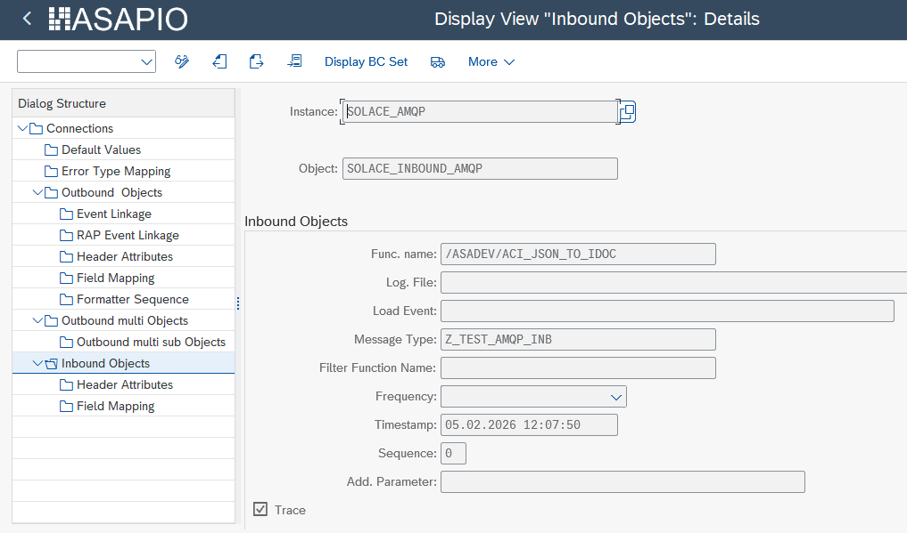
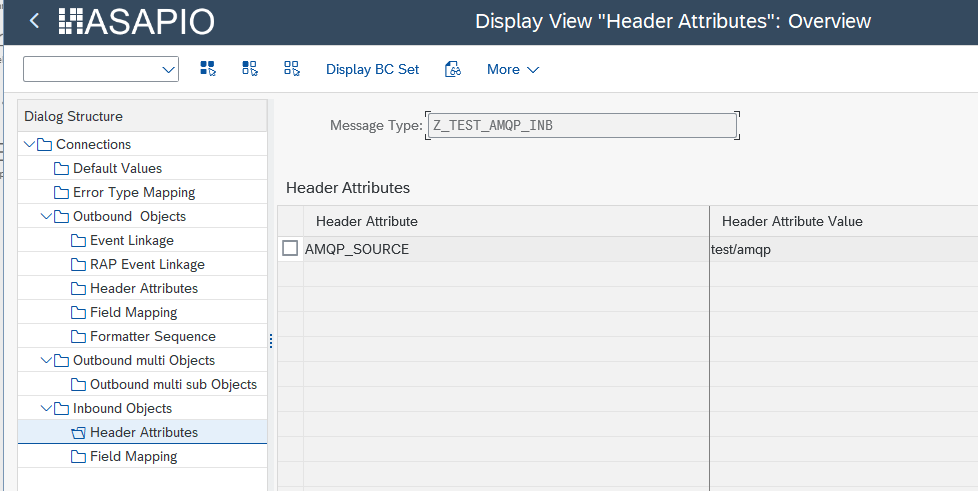
Outbound Configuration
For outbound messaging, you can use and combine the following methods:
- Simple Notifications – extractor
/ASADEV/ACI_GEN_NOTIFY_SOLACE - Message Builder – extractor
/ASADEV/ACI_GEN_VIEWEXT_SOLACE+ formatter/ASADEV/ACI_GEN_VIEWFRM_SOLACE - Packed Load – extractor
/ASADEV/ACI_GEN_VIEW_EXT_PACKwith Load Type set to Packed Load

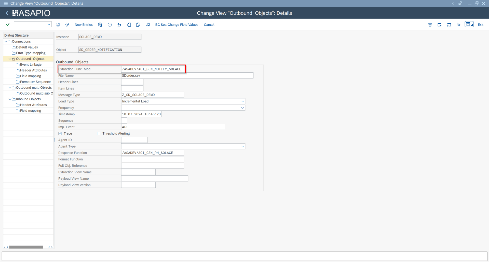
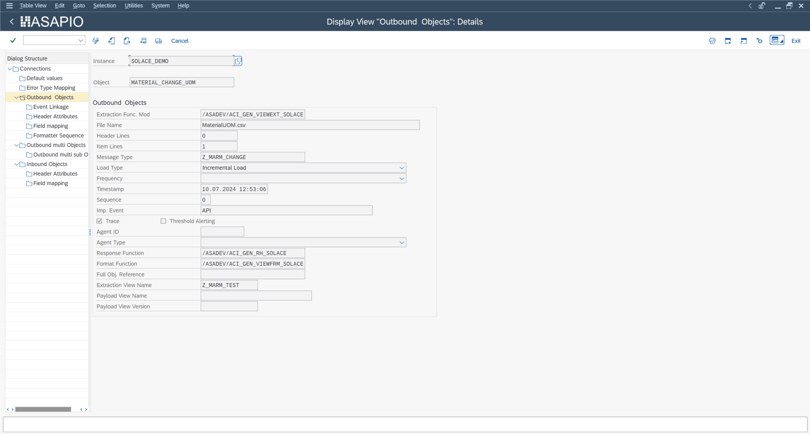
| Role | Function Module |
|---|---|
| Simple notification extractor | /ASADEV/ACI_GEN_NOTIFY_SOLACE |
| DB view–based extractor | /ASADEV/ACI_GEN_VIEWEXT_SOLACE |
| Formatter | /ASADEV/ACI_GEN_VIEWFRM_SOLACE |
| Packed Load extractor | /ASADEV/ACI_GEN_VIEW_EXT_PACK |
Key Header Attributes
| Attribute | Value / Description |
|---|---|
SOLACE_CALL_METHOD | POST |
SOLACE_CONT_TYPE | Content type (e.g. application/json) |
SOLACE_DELIV_MODE | Persistent (recommended for reliable delivery) |
SOLACE_TOPIC | Topic name (static or template for dynamic topics) |
SOLACE_OBJECT_HEADER_DB_TABLE | Source table for message header metadata |
Dynamic Topics
Introduced in release 9.32504, dynamic topics allow the Solace topic name to be constructed from event payload field values at runtime. Configure this in the Field Mapping of the outbound object:
- Map SAP source fields to URL path segments within the topic template
- Apply conversion methods to transform field values (e.g. trim leading zeros from material numbers)
- The resulting topic string is assembled at runtime for each event
Example: sap/s4/sales-orders/{region}/{salesOrg}/CHANGED where {region} and {salesOrg} are derived from VBAK fields.